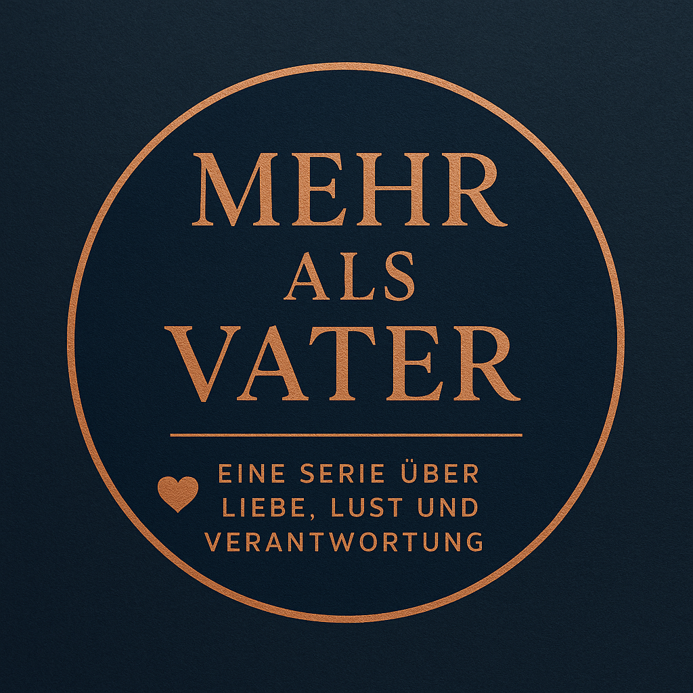

Herzlich Willkommen bei Nika Pecunia
Geschichten über Nähe, über Männer, die Verantwortung tragen, über Frauen, die Tiefe suchen – und über das, was uns verbindet, auch wenn das Leben nicht immer dafür gemacht ist. Diese Webseite ist das Zuhause von Nika Pecunia – einer Autorin, die sich modernen Beziehungen widmet, leise Emotionen gross macht und Geschichten erzählt, in denen Verantwortung und Verlangen nebeneinander existieren dürfen. Im Zentrum steht die Romanreihe Mehr als Vater – mit dem Auftaktband Wenn Nähe passiert …, und dem zweiten Band bereits in Arbeit.
„Was, wenn zwei Leben nicht zusammenpassen – aber zwei Menschen schon?“
„Nähe geschieht nicht immer dann, wenn wir bereit sind – manchmal passiert sie einfach.“
„Liebe ist nicht die Abwesenheit von Zweifel. Sondern die Bereitschaft, trotzdem zu bleiben.“
Über Nika Pecunia
Nika Pecunia schreibt über das, was zwischen Menschen geschieht, wenn keine Rollenbilder mehr greifen. Ihre Geschichten erzählen von Nähe, die nicht laut sein muss. Von Verantwortung, die nicht als Opfer daherkommt. Und von Verbindungen, die sich jenseits klassischer Erwartungen entfalten dürfen.
Im Mittelpunkt stehen oft Männer, die bleiben – Frauen, die nicht retten müssen – und Kinder, die einfach da sind und trotzdem alles verändern.
Nikas Stil ist emotional, dicht, und zugleich zurückhaltend. Sie erzählt keine perfekten Geschichten – sondern glaubwürdige. Keine einfachen Liebesromane – sondern literarische Annäherungen an das, was Liebe bedeuten kann.
Die Buchserie: Mehr als Vater
Mehr als Vater ist eine Romanreihe über moderne Väter, Verantwortung, neue Rollenbilder – und das Risiko, sich wirklich auf jemanden einzulassen.
Jeder Band erzählt von einem Mann, der sich öffnet. Einer Frau, die sich nicht entschuldigt. Und einem Alltag, der Nähe nicht verhindert, sondern erfordert.
Es geht um leise Anziehung. Um echte Gespräche. Und um die Kraft, dazubleiben, wenn es kompliziert wird.
Aktueller Roman: Wenn Nähe passiert …
📘 Band 1 der Serie Mehr als Vater

Matt lebt strukturiert – mit seinem Sohn Ben, mit festen Tagesabläufen, mit einem ruhigen Zuhause. Karo lebt laut – zwischen Kameras, Terminen, Erwartungen.
Beide haben sich eingerichtet – ohne Platz für Nähe. Doch ein Abend reicht. Ohne Namen. Ohne Versprechen. Nur dieses eine Gefühl.
Als sich ihre Wege erneut kreuzen, beginnt eine Verbindung, die niemand geplant hat – aber niemand leugnen kann.
„Wenn Nähe passiert …“ ist ein Roman über das, was möglich ist, wenn Menschen einander Raum lassen – und trotzdem näherkommen.
Stimmen der Vorleser:innen
„Ich bin alleinerziehender Vater – wie Matt. Und ich habe gespürt, wie viel Wahrheit in dieser Geschichte steckt. Es war, als würde jemand endlich unsere Seite erzählen.“
— Thomas, 41
„Diese Geschichte hat mich wortlos gemacht. Ich habe so viel erkannt – in Karo, in mir, in uns. Es war keine typische Romanze, sondern echte Tiefe.“
— Leonie, 34
„Ich dachte, ich wüsste, was mich erwartet. Aber dann war da so viel mehr. Wärme, Schmerz, Nähe. Ich habe es in einem Atemzug gelesen.“
— Mara, 29
Kontakt
📧 kontakt@nikapecunia.ch
Ob Feedback, Gedanken oder einfach ein kurzer Gruss – Nika freut sich über jede Nachricht.